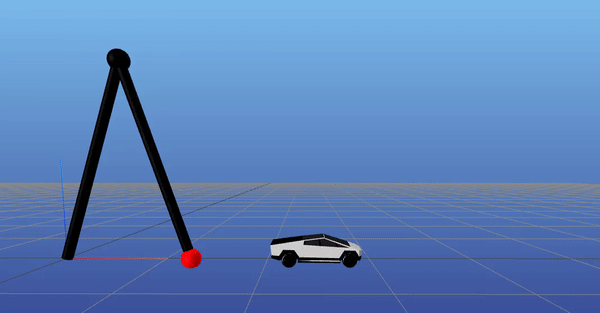
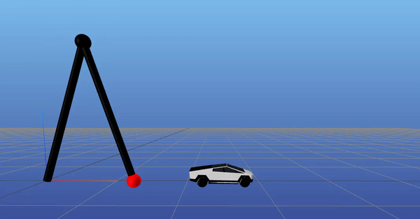

CYBERTOSS

CYBERTOSS

This is a motion-planning project to move an object to a goal configuration using a simple manipulator. Contact-implicit trajectory optimization is used plan behavior that initiates contact between the end effector and object in order to move the object. The manipulator is modeled as a double pendulum and the object as a planar particle with a single-patch, nonlinear friction cone that produces maximum-dissipation Coulomb friction.
An open-source, Julia implementation is available here.